Points on floats¶
Thanks¶
This page comes largely from the wikipedia floating point article.
I read What every computer scientist should know about floating point at some - er - point.
Starting to float¶
This is a floating point number:
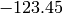
We can also write this as:
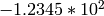
Well, actually, we can write it like this:
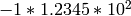
Let  (the sign) be a variable that is
(the sign) be a variable that is  if the sign of the number is
positive, and
if the sign of the number is
positive, and  if the number is negative. Here
if the number is negative. Here  .
.
Let  (the significand) be a number - here 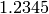, with the floating point
assumed to be after the first digit. The significand is sometimes called the
mantissa.
(the significand) be a number - here 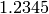, with the floating point
assumed to be after the first digit. The significand is sometimes called the
mantissa.
Let  (the exponent) be the power of 10 to apply. Here 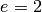. We now write:
(the exponent) be the power of 10 to apply. Here 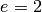. We now write:
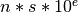
We’re all used to thinking of the  in 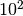 as being the number of places to
shift the decimal point to the right. That is, we take the decimal point of the
significand and shift it two to the right to get the number we mean.
in 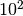 as being the number of places to
shift the decimal point to the right. That is, we take the decimal point of the
significand and shift it two to the right to get the number we mean.
Your actual floats¶
Actually, floating point numbers are almost invariably stored in IEEE 754 binary (base 2) format. So far we’ve been looking at decimal (base 10) format numbers.
Obviously we can store the sign in one binary bit.
We store the significand as a binary number, again with an implied floating point position. So:
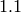
where (binary) equals (binary) * 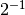 (decimal) which equals (decimal) 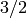.
Of course (binary) =  , and in general, the maximum number that can
be stored for
, and in general, the maximum number that can
be stored for  binary digits without a floating point is 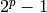.
binary digits without a floating point is 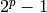.
It looks like we’d need two bits of storage to store (binary). But no,
because, unlike the decimal case, we know that the first binary digit in the
significand is 1. Why? In general (for decimal or binary) the first digit
cannot be 0, because we can always represent a number beginning with 0 by
subtracting from the exponent and shifting the significand digits left until the
first digit is not zero. For decimal, if the first digit is not 0, it could be
1-9, but for binary, it can only be 1. So, for binary, we can infer the first
and we only need one bit of storage to store . Of course that means
the significand can only be or 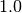 in this case.
IEEE 32-bit binary float.¶
This is a common floating point format, often called a single-precision float.
As we expect, this format devotes one bit to the sign.
It devotes 23 bits to the significand. From the argument above, by assuming a
first digit of 1, this gives it an effective 24 bits of storage for the
significand. The significand can thus be from (binary) to 1.(23 ones) in
binary, which is, in decimal, a range of to 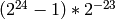. In sympy:
>>> from sympy import Integer, Float
>>> two = Integer(2)
>>> s_bits_32 = 23
>>> biggest_s_32 = (two**(s_bits_32+1)-1) * (two**(-s_bits_32))
>>> biggest_s_32
16777215/8388608
>>> Float(biggest_s_32)
1.99999988079071
With 1 bit for the sign, and 23 bits for the sigificand, there are 8 bits remaining for the exponent.
The exponent is not stored as a standard signed integer. An exponent of all 0s
indicates a zero number or a subnormal number [1]. An
exponent of all 1s indicates an infinity or not-a-number value. If we treat the
8 bits of the exponent as an unsigned number (call it  ) then the actual
exponent is given by:
) then the actual
exponent is given by:
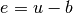
where  is the bias - and the bias for 32 bit IEEE floats, is 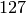. With 8
bits, could be 0 to 255, but both 0 and 255 are reserved (0 for zeros and
subnormals; 255 for non-finite, as above). Thus the effective range of is
1-254, and the effective range of is -126 to 127.
is the bias - and the bias for 32 bit IEEE floats, is 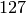. With 8
bits, could be 0 to 255, but both 0 and 255 are reserved (0 for zeros and
subnormals; 255 for non-finite, as above). Thus the effective range of is
1-254, and the effective range of is -126 to 127.
What’s the largest positive 32 bit IEEE float? Easy:
>>> e_bits_32 = 8
>>> e_bias_32 = 127
>>> biggest_e_32 = (two**e_bits_32)-1-e_bias_32 - 1 # -1 for all-ones reserved
>>> biggest_e_32
127
>>> biggest_float32 = biggest_s_32 * two**biggest_e_32
>>> biggest_float32
340282346638528859811704183484516925440
>>> Float(biggest_float32)
3.40282346638529e+38
The most negative value? Just the same number with -1 sign (sign bit is 1).
And the smallest value? [1]
>>> most_neg_e_32 = -e_bias_32 + 1 # +1 for zeros reserved
>>> most_neg_e_32
-126
>>> smallest_s_32 = 1
>>> smallest_float32 = smallest_s_32 * two**most_neg_e_32
>>> smallest_float32
1/85070591730234615865843651857942052864
>>> Float(smallest_float32)
1.17549435082229e-38
IEEE 64-bit binary float.¶
This is the other common floating point format, often called a double-precision float.
It uses:
- 1 bit for the sign
- 52 bits for the significand
- 11 bits for the exponent
and the exponent bias is 1023 (wikipedia floating point):
>>> s_bits_64 = 52
>>> biggest_s_64 = (two**(s_bits_64+1)-1) * (two**(-s_bits_64))
>>> biggest_s_64
9007199254740991/4503599627370496
>>> Float(biggest_s_64)
2.00000000000000
Well - it’s not quite 2.0 - but within the limits of the printing precision.
Largest 64-bit float:
>>> e_bits_64 = 11
>>> e_bias_64 = 1023
>>> biggest_e_64 = (two**e_bits_64)-1-e_bias_64 - 1 # -1 for all-ones reserved
>>> biggest_e_64
1023
>>> biggest_float64 = biggest_s_64 * two**biggest_e_64
>>> Float(biggest_float64)
1.79769313486232e+308
Smallest [1]:
>>> most_neg_e_64 = -e_bias_64 + 1 # +1 for zeros reserved
>>> most_neg_e_64
-1022
>>> smallest_s_64 = 1
>>> smallest_float64 = smallest_s_64 * two**most_neg_e_64
>>> Float(smallest_float64)
2.22507385850720e-308
Floating point and integers¶
Consider the significand in an IEEE 32 bit floating point number.
Neglect for a moment, the assumed floating point after the first digit. The significand has 24 binary digits (including the assumed first digit). That is, neglecting the floating point, it can represent the integers from 1 (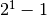) to 16777215 (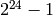). Now let’s take into account the floating point. In order to store 1, the exponent can just be 0, no problem. In order to store , the exponent has to be 23 to push the floating point 23 digits to the right. As we know, the IEEE expoonent can range between -126 and 127, so 23 is also OK.
Now set the significand to 1.0 and the exponent to be 24. This is 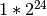 -
or 16777216. But the next number, 16777217, we can’t store exactly, because
this is  , and we’ve run out of digits to store the extra 1.
, and we’ve run out of digits to store the extra 1.
All this means that the IEEE 32 bit binary format can store all integers -16777216 to 16777216 (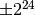) exactly.
By the same argument, the IEEE 64 bit binary format can exactly store all integers between 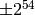.
Bit patterns¶
You don’t believe me? Let’s predict the bit pattern for storing the number 16777216 in IEEE 32 bit floating point. We established that this has 1.0 for the significand, and the value 24 for the exponent.
The wikipedia floating point page tells us that the IEEE standard has a 32 bit binary float stored as the sign bit, followed by 8 exponent bits, followed by the 23 significand bits, with the most significant bits first.
So we have:
- 0 for the sign bit
- the exponent part 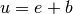 = 24 + 127 = 151
- 0 for the significand (implicit 1.0)
The binary representation of 151 is:
>>> import numpy as np
>>> np.binary_repr(151)
'10010111'
We get the memory from our float represented as an unsigned 32 bit integer:
>>> float32_mem = np.float32(16777216).view(np.uint32)
and show it as binary:
>>> np.binary_repr(float32_mem)
'1001011100000000000000000000000'
How about -16777215? It should be 1 for the sign, 23 for the exponent (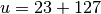 = 50), and all ones for the significand:
>>> np.binary_repr(150)
'10010110'
>>> np.binary_repr(np.float32(-16777215).view(np.uint32))
'11001011011111111111111111111111'
| [1] | (1, 2, 3) Subnormal numbers (wikipedia subnormal numbers) are numbers smaller than those you can store with the simple significand and exponent mechanisms this page describes. Thus, for a 32 bit float, the smallest normal number is around 1.17549435082229e-38. The IEEE standard contains a trick for storing smaller numbers than this, by using an exponent of 0 - see the wikipedia page for details. |